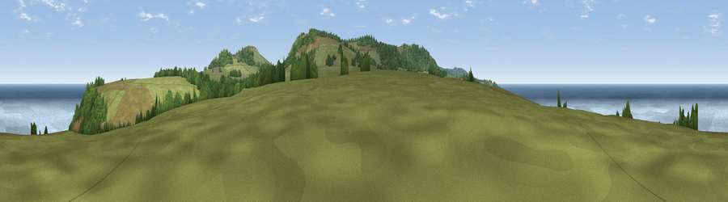

Viewpoint near Zennor
#4421 in England · top 15% of its area beats it · near Zennor · path 216 mWhere it is
The exact computed spot (SW 47100 40338). Click the marker for map links.
Public access: the nearest public right of way is about 216 m away — the final stretch may cross private land. Computed from Natural England's CRoW access layer and OpenStreetMap rights of way — not the legal definitive map. Always verify locally.
The view, rendered

A 360° render of this exact spot computed from the terrain model, tree cover and land cover — summer colours, afternoon light, calibrated against photographs of famous viewpoints. Real trees, hedges and buildings will differ in detail.
The panorama
Grey silhouette: terrain skyline in each direction (720 bearings, Earth curvature and refraction included). Dashed green: skyline with trees (+15 m) and buildings (+8 m) as obstacles. Blue strip: how far the ground is visible on each bearing.
Where the view opens
Wedge length = distance to the farthest visible ground on that bearing (vegetation-aware). Rings at 10, 25 and 50 km.
What fills the view
51% water · 34% grassland · 14% woodland ·
Angular shares of the visible panorama (visual magnitude), not map area. Landscape diversity 0.45 (0–1 Shannon).
Key numbers
More beautiful places nearby
The staircase of upgrades: each row has a higher view potential than everything closer. Driving times are estimates from straight-line distance, calibrated against real road routing — check an actual route before setting out.
| Place | Direction | Drive | Score |
|---|---|---|---|
| Viewpoint near Zennor | SW · 0 km | ~1 min | 71.8 |
| Viewpoint near Towednack | SSE · 2 km | ~5 min | 83.2 |
| Viewpoint near Towednack | ESE · 2 km | ~5 min | 84.2 |
| Rosewall Hill | ESE · 2 km | ~5 min | 88.0 |
| Viewpoint near Combe Martin | NE · 155 km | ~178 min | 88.9 |
| Holdstone Hill | NE · 157 km | ~179 min | 90.2 |
| The Knoll | ENE · 211 km | ~228 min | 91.0 |
50.20888, -5.54585 · source: screening · position refined by local search. Computed location — check access rights before visiting.